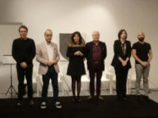

Catanzaro, 13 Novembre - Torna Poiesis - Progetti d'Arte a cura del Teatro di Calabria e riprende da dove aveva lasciato, domenica sera la suggestiva sala del Museo MARCA di Catanzaro era
completamente gremita, a tal punto che è stato necessario aggiungere tante sedie in fondo. Non ci poteva essere inizio migliore per la nuova stagione 2018-19.
Questo primo incontro di Letteratura, dal titolo 'Ulisse variazioni sul mito', è stato dedicato al viaggio letterario compiuto dal personaggio Ulisse e dal suo mito.
Il professore Luigi La Rosa ha accompagnato i presenti in questo piacevole viaggio articolato in due fasi distinte, la prima dedicata all'Odissea, all'Ulisse di Omero,
la seconda alle più importanti variazioni su questo mito. In realtà una prima variazione era già stata fatta in apertura di serata con una canzone suonata e cantata da Paolo Formoso, Itaca,
testo di Sergio Bardotti e musica di Lucio Dalla, in cui il protagonista è un marinaio di Ulisse che si rivolge al suo capitano.
Per la prima parte del viaggio, l'Odissea, il professore ha scelto alcuni degli episodi più importanti di Ulisse, magistralmente interpretato dal professore Aldo Conforto,
come l'incontro con Polifemo, nel libro IX, o l'avventura da Calipso, Marta Parise, la bellissima e immortale ninfa che lo trattiene con le sue arti magiche, nel libro V, oppure quando
incontra nel regno dei morti sua madre, Mariarita Albanese, e l'indovino Tiresia, Salvatore Venuto, che gli dirà quello che sarà il suo futuro, nel libro XI , e, infine, il passaggio
davanti all'isola delle sirene, con le ammaliatrici Mariarita Albanese e Marta Parise che lo chiamano e lo invitano a rimanere con loro con lo scopo poi di ucciderlo,
lui vorrebbe cedere alle loro lusinghe ma i suoi uomini lo tengono saldamente legato all'albero della nave, nel libro XII.
Nella seconda parte, quella dedicata alle variazioni,
il professore La Rosa ha proposto l'incontro che D'Annunzio, Salvatore Venuto, immagina nel primo libro delle Laudi, il Maia, quando pensa di vedere l'eroe acheo partire ancora una volta
dalla sua Itaca per un altro viaggio, successivamente un brano dell'Ulisse di Alfred Tennyson interpretato da Mariarita Albanese, un Ulisse che si sottomette a tutto ma non per essere
schiacciato dal destino, anzi, per contrastarlo e per combatterlo, e infine l'incontro tra Dante, Aldo Conforto, e Ulisse nel Canto XXVI dell' Inferno, quello dedicato ai consiglieri fraudolenti,
cioè a coloro che non agirono con le armi e il coraggio ma con l'acutezza spregiudicata dell'ingegno. Per Dante, infatti, Ulisse aveva commesso tre peccati, l'inganno del Cavallo di Troia,
la scoperta di Achille, fatto travestire da donna dalla madre affinché non andasse alla Guerra di Troia, e il furto del Palladio che proteggeva Troia.
Ulisse è colui che sfida il divieto divino perché è arrogantemente convinto che la sola ragione possa fare percorrere tutte le strade, anche quelle proibite.
Lo stesso peccato, in pratica, che si sta rimproverando Dante. Da segnalare una bellissima interpretazione di Mariarita Albanese del testo della canzone Odysseus di Francesco Guccini.
Grande apprezzamento del pubblico sottolineato dai numerosi applausi e dal grande abbraccio finale a tutti gli attori.
Il prossimo appuntamento sarà Domenica 25 Novembre con un reading dal titolo 'Leopardi - La tragica grandezza della natura'.
Si ringraziano Saverio Fontana e la redazione di INFOOGGI.IT
Poiesis le Variazioni sul Mito di Ulisse al Marca
articolo di teatro del "Teatro di Calabria Aroldo Tieri" pubblicato nell'anno 2018
Aldo Conforto Odissea, all'Ulisse di Omero
Aldo Conforto Itaca, testo di Sergio Bardotti e musica di Lucio Dalla
Aldo Conforto Ulisse è colui che sfida il divieto divino perché è arrogantemente convinto che la sola ragione
canzone Odysseus di Francesco Guccini Leopardi - La tragica grandezza della natura

Riccardo Conforto
https://aldoconforto.github.io/teatro/riccardo-conforto-design-e-gestione-del-sito
{kind=link}